Lesespur: Aufwärmen: warum der Körper Anlauf braucht – Lesespurgeschichte mit Rätseln (Klasse 3)

Lesespur: Barbarazweige: der Brauch am 4. Dezember – Lesespurgeschichte mit Rätseln (Klasse 3)

Lesespur: Das Drachenfest – Lesespurgeschichte mit Rätseln (Klasse 3)

Lesespur: Das Eis am Dach – Lesespurgeschichte mit Rätseln (Klasse 3)
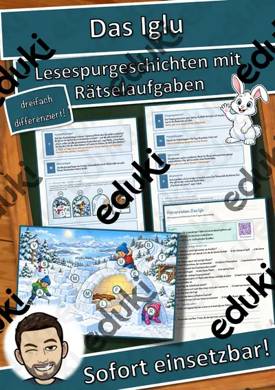
Lesespur: Das Iglu – Lesespurgeschichte mit Rätseln (Klasse 3)

Lesespur: Das Laternenfest – Lesespurgeschichte mit Rätseln (Klasse 3)
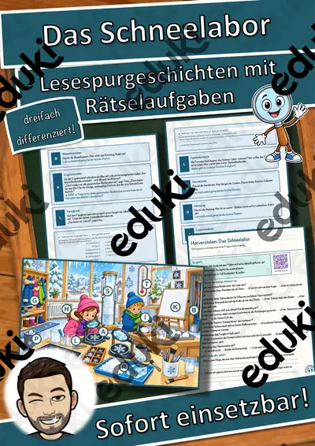
Lesespur: Das Schneelabor – Lesespurgeschichte mit Rätseln (Klasse 3)
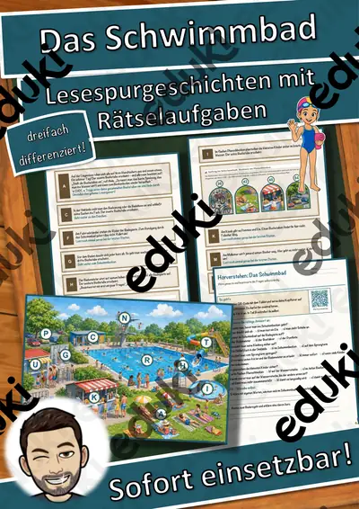
Lesespur: Das Schwimmbad – Lesespurgeschichte mit Rätseln (Klasse 3)

Lesespur: Das Winter-Zielwerfen – Lesespurgeschichte mit Rätseln (Klasse 3)

Lesespur: Das Winterquartier – Lesespurgeschichte mit Rätseln (Klasse 3)

Lesespur: Das süße Wintergemüse – Lesespurgeschichte mit Rätseln (Klasse 3)

Lesespur: Datendetektive: Daten sammeln, zählen, darstellen – Lesespurgeschichte mit Rätseln (Klasse 3)

Lesespur: Der Ahornweg – Lesespurgeschichte mit Rätseln (Klasse 3)
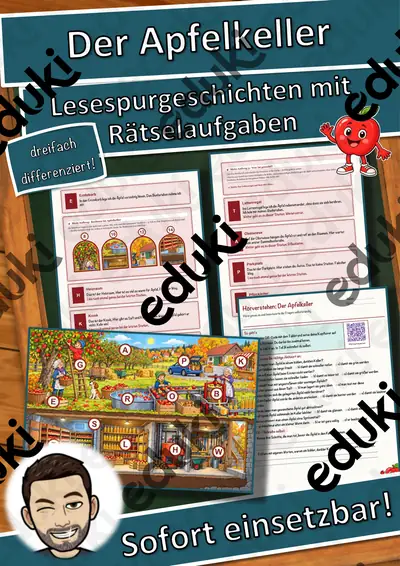
Lesespur: Der Apfelkeller – Lesespurgeschichte mit Rätseln (Klasse 3)

Lesespur: Der Christbaumhof – Lesespurgeschichte mit Rätseln (Klasse 3)

Lesespur: Der Eisbrecher – Lesespurgeschichte mit Rätseln (Klasse 3)
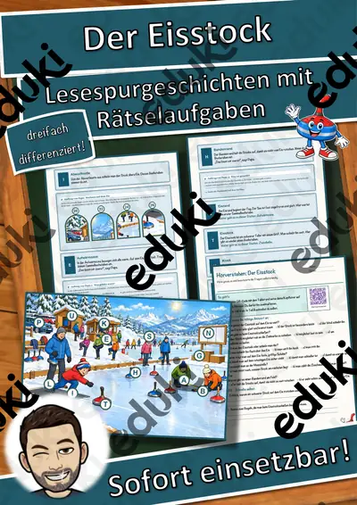
Lesespur: Der Eisstock – Lesespurgeschichte mit Rätseln (Klasse 3)

Lesespur: Der Herbstwald – Lesespurgeschichte mit Rätseln (Klasse 3)

Lesespur: Der Kanon: eine Melodie, viele Stimmen – Lesespurgeschichte mit Rätseln (Klasse 3)

Lesespur: Der Kartoffelhof – Lesespurgeschichte mit Rätseln (Klasse 3)

Lesespur: Der Kürbis – Lesespurgeschichte mit Rätseln (Klasse 3)

Lesespur: Der Kürbishof – Lesespurgeschichte mit Rätseln (Klasse 3)

Lesespur: Der Reiterhof – Lesespurgeschichte mit Rätseln (Klasse 3)

Lesespur: Der Saugroboter: Sensoren und Hindernisse – Lesespurgeschichte mit Rätseln (Klasse 3)
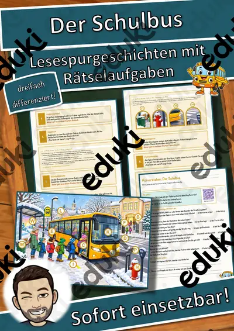
Lesespur: Der Schulbus – Lesespurgeschichte mit Rätseln (Klasse 3)
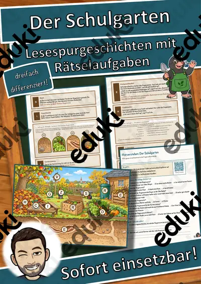
Lesespur: Der Schulgarten – Lesespurgeschichte mit Rätseln (Klasse 3)
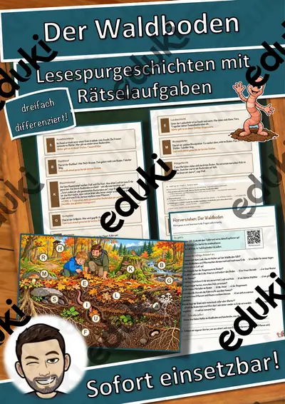
Lesespur: Der Waldboden – Lesespurgeschichte mit Rätseln (Klasse 3)
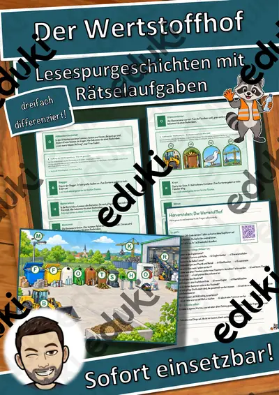
Lesespur: Der Wertstoffhof – Lesespurgeschichte mit Rätseln (Klasse 3)

Lesespur: Der Winterdienst – Lesespurgeschichte mit Rätseln (Klasse 3)
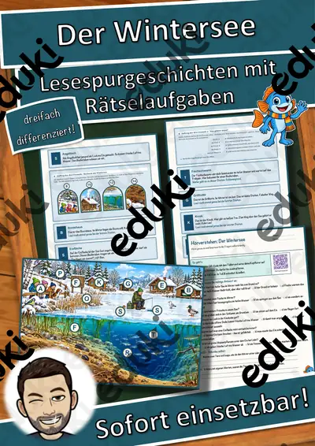
Lesespur: Der Wintersee – Lesespurgeschichte mit Rätseln (Klasse 3)

Lesespur: Der Zwiebelgarten – Lesespurgeschichte mit Rätseln (Klasse 3)
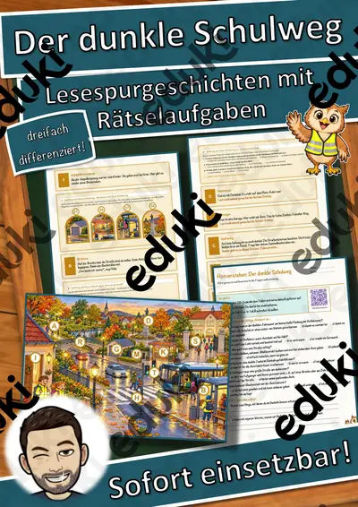
Lesespur: Der dunkle Schulweg – Lesespurgeschichte mit Rätseln (Klasse 3)

Lesespur: Der frostige Wintermorgen – Lesespurgeschichte mit Rätseln (Klasse 3)

Lesespur: Der kahle Winterbaum – Lesespurgeschichte mit Rätseln (Klasse 3)

Lesespur: Der leise Winterwald – Lesespurgeschichte mit Rätseln (Klasse 3)

Lesespur: Der sichtbare Atem – Lesespurgeschichte mit Rätseln (Klasse 3)

Lesespur: Die Baustelle – Lesespurgeschichte mit Rätseln (Klasse 3)

Lesespur: Die Blaskapelle: Musik im Freien – Lesespurgeschichte mit Rätseln (Klasse 3)

Lesespur: Die Bundesjugendspiele: laufen, springen, werfen – Lesespurgeschichte mit Rätseln (Klasse 3)

Lesespur: Die Feuerwache – Lesespurgeschichte mit Rätseln (Klasse 3)

Lesespur: Die Gleichnisse Jesu: verlorenes Schaf, barmherziger Samariter – Lesespurgeschichte mit Rätseln (Klasse 3)

Lesespur: Die Huskyfarm – Lesespurgeschichte mit Rätseln (Klasse 3)

Lesespur: Die Igel-Auffangstation – Lesespurgeschichte mit Rätseln (Klasse 3)

Lesespur: Die Kerzenwerkstatt – Lesespurgeschichte mit Rätseln (Klasse 3)

Lesespur: Die Lebkuchenbäckerei – Lesespurgeschichte mit Rätseln (Klasse 3)

Lesespur: Die Nebelwiese – Lesespurgeschichte mit Rätseln (Klasse 3)

Lesespur: Die Polarstation – Lesespurgeschichte mit Rätseln (Klasse 3)

Lesespur: Die Rodelbahn – Lesespurgeschichte mit Rätseln (Klasse 3)

Lesespur: Die Schneekanone – Lesespurgeschichte mit Rätseln (Klasse 3)

Lesespur: Die Schneeschuhwanderung – Lesespurgeschichte mit Rätseln (Klasse 3)

Lesespur: Die Schneespur – Lesespurgeschichte mit Rätseln (Klasse 3)

Lesespur: Die Sprungschanze – Lesespurgeschichte mit Rätseln (Klasse 3)

Lesespur: Die Sternsinger: Brauch am Dreikönigstag – Lesespurgeschichte mit Rätseln (Klasse 3)

Lesespur: Die Streuobstwiese – Lesespurgeschichte mit Rätseln (Klasse 3)
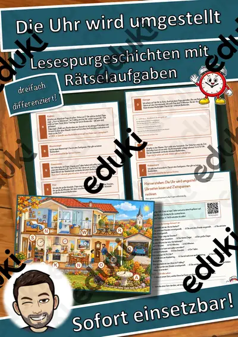
Lesespur: Die Uhr wird umgestellt: Uhrzeiten lesen und Zeitspannen rechnen – Lesespurgeschichte mit Rätseln (Klasse 3)

Lesespur: Die Vogelhochzeit: ein sorbischer Brauch im Januar – Lesespurgeschichte mit Rätseln (Klasse 3)

Lesespur: Die Vogelscheuche – Lesespurgeschichte mit Rätseln (Klasse 3)
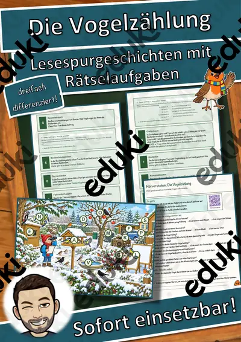
Lesespur: Die Vogelzählung – Lesespurgeschichte mit Rätseln (Klasse 3)
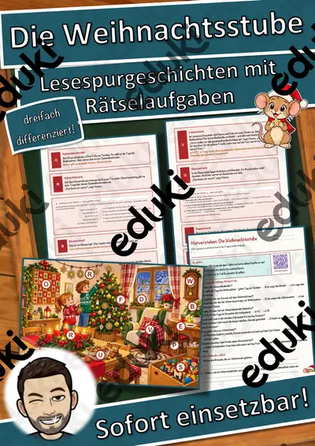
Lesespur: Die Weihnachtsstube – Lesespurgeschichte mit Rätseln (Klasse 3)

Lesespur: Die Winterfütterung – Lesespurgeschichte mit Rätseln (Klasse 3)
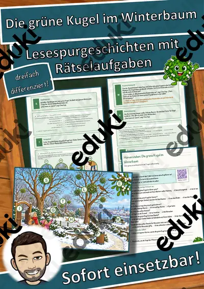
Lesespur: Die grüne Kugel im Winterbaum – Lesespurgeschichte mit Rätseln (Klasse 3)

Lesespur: Die lange Kulturnacht: was macht Kultur wertvoll? – Lesespurgeschichte mit Rätseln (Klasse 3)

Lesespur: Ehrlich sein – Lesespurgeschichte mit Rätseln (Klasse 3)

Lesespur: Ein Schlitten nach eigenem Plan: zeichnen, bauen, testen – Lesespurgeschichte mit Rätseln (Klasse 3)
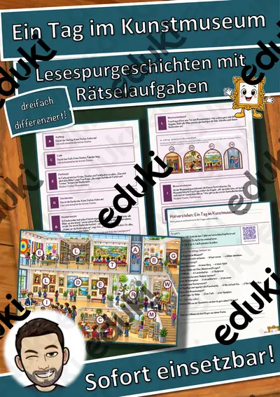
Lesespur: Ein Tag im Kunstmuseum – Lesespurgeschichte mit Rätseln (Klasse 3)

Lesespur: Filzen, Sticken und Knüpfen – Lesespurgeschichte mit Rätseln (Klasse 3)

Lesespur: Fit durch den Winter – Lesespurgeschichte mit Rätseln (Klasse 3)

Lesespur: Frühlingsanfang: Tag und Nacht sind gleich lang – Lesespurgeschichte mit Rätseln (Klasse 3)
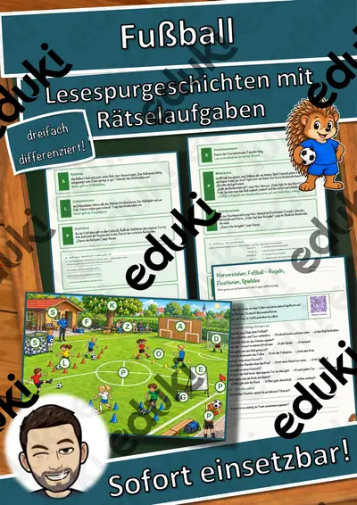
Lesespur: Fußball: Regeln, Positionen, Spielidee – Lesespurgeschichte mit Rätseln (Klasse 3)

Lesespur: Gefühle verstehen und zeigen – Lesespurgeschichte mit Rätseln (Klasse 3)

Lesespur: Geheimschriften: Nachrichten verschlüsseln und entschlüsseln – Lesespurgeschichte mit Rätseln (Klasse 3)

Lesespur: Halloween: woher das Fest kommt und wie man es in Irland feiert – Lesespurgeschichte mit Rätseln (Klasse 3)
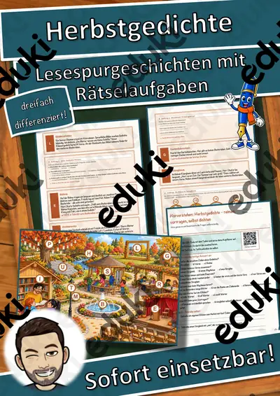
Lesespur: Herbstgedichte: reimen, vortragen, selbst dichten – Lesespurgeschichte mit Rätseln (Klasse 3)

Lesespur: Jonglieren: mit Tüchern, Bällen und Ringen – Lesespurgeschichte mit Rätseln (Klasse 3)

Lesespur: Kann ein Computer lernen?: KI für Kinder – Lesespurgeschichte mit Rätseln (Klasse 3)

Lesespur: Kinderrechte weltweit: jedes Kind zählt – Lesespurgeschichte mit Rätseln (Klasse 3)
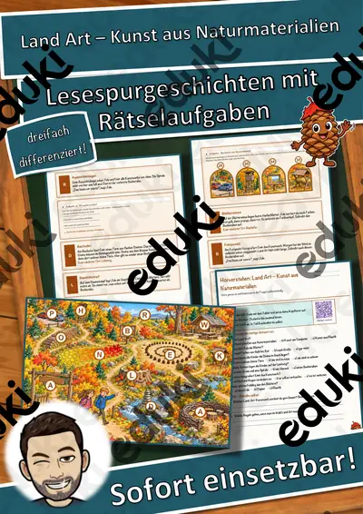
Lesespur: Land Art: Kunst aus Naturmaterialien – Lesespurgeschichte mit Rätseln (Klasse 3)

Lesespur: Lichterfeste in den Religionen: Diwali, Chanukka, Martinstag, Advent – Lesespurgeschichte mit Rätseln (Klasse 6)
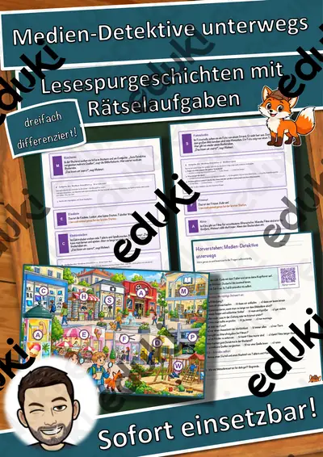
Lesespur: Medien-Detektive unterwegs – Lesespurgeschichte mit Rätseln (Klasse 3)

Lesespur: Mein Traumhaus: Architektur für Kinder – Lesespurgeschichte mit Rätseln (Klasse 3)

Lesespur: Meine Daten: was ich im Netz für mich behalte – Lesespurgeschichte mit Rätseln (Klasse 3)

Lesespur: Morsen und Signale: Nachrichten codieren – Lesespurgeschichte mit Rätseln (Klasse 3)
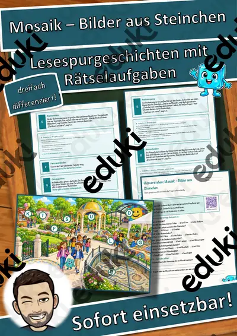
Lesespur: Mosaik: Bilder aus Steinchen – Lesespurgeschichte mit Rätseln (Klasse 3)

Lesespur: Musik und Gefühle: wie Musik uns bewegt – Lesespurgeschichte mit Rätseln (Klasse 3)

Lesespur: Musikinstrumente der Welt: eine Reise durchs Museum – Lesespurgeschichte mit Rätseln (Klasse 3)
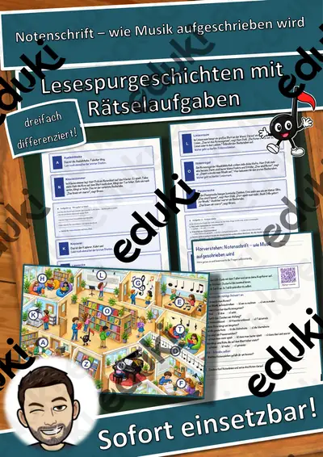
Lesespur: Notenschrift: wie Musik aufgeschrieben wird – Lesespurgeschichte mit Rätseln (Klasse 3)

Lesespur: Paul Klee: mit Linien spazieren gehen – Lesespurgeschichte mit Rätseln (Klasse 3)
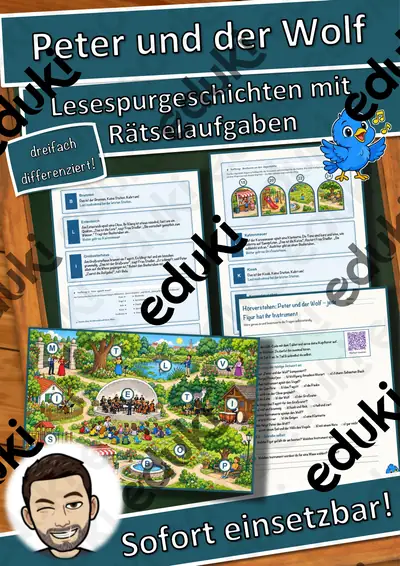
Lesespur: Peter und der Wolf: jede Figur hat ihr Instrument – Lesespurgeschichte mit Rätseln (Klasse 3)

Lesespur: Pixelbilder: wie der Computer Bilder speichert – Lesespurgeschichte mit Rätseln (Klasse 3)

Lesespur: Santa Lucia: das Lichterfest im Dezember – Lesespurgeschichte mit Rätseln (Klasse 3)

Lesespur: Scherenschnitt und Silhouetten – Lesespurgeschichte mit Rätseln (Klasse 3)

Lesespur: Sichere Passwörter: mein digitaler Schlüssel – Lesespurgeschichte mit Rätseln (Klasse 3)

Lesespur: Spiele aus aller Welt: hüpfen, werfen, fangen wie anderswo – Lesespurgeschichte mit Rätseln (Klasse 3)

Lesespur: Spielregeln erfinden: eigene Spiele ausdenken, testen, verbessern – Lesespurgeschichte mit Rätseln (Klasse 3)

Lesespur: Sprinten und Starten: schnell wie der Wind – Lesespurgeschichte mit Rätseln (Klasse 3)

Lesespur: Streit schlichten: wir finden eine Lösung – Lesespurgeschichte mit Rätseln (Klasse 3)

Lesespur: Stricken mit der Strickliesel: Schnüre für kleine Geschenke – Lesespurgeschichte mit Rätseln (Klasse 3)

Lesespur: Takt und Rhythmus – Lesespurgeschichte mit Rätseln (Klasse 3)

Lesespur: Taschengeld: mein Geld klug einteilen – Lesespurgeschichte mit Rätseln (Klasse 3)

Lesespur: Teamgeist: gemeinsam ans Ziel – Lesespurgeschichte mit Rätseln (Klasse 3)
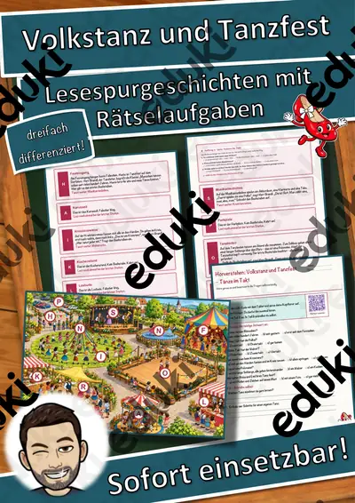
Lesespur: Volkstanz und Tanzfest: Tänze im Takt – Lesespurgeschichte mit Rätseln (Klasse 3)

Lesespur: Warme und kalte Farben – Lesespurgeschichte mit Rätseln (Klasse 3)

Lesespur: Warum Regeln wichtig sind – Lesespurgeschichte mit Rätseln (Klasse 3)

Lesespur: Warum die Tanne grün bleibt – Lesespurgeschichte mit Rätseln (Klasse 3)
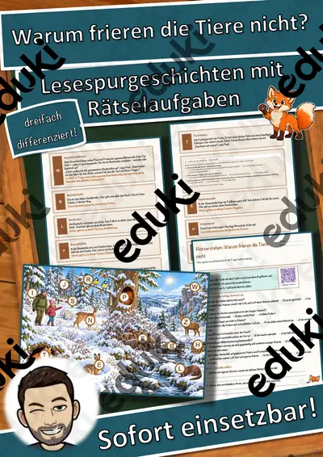
Lesespur: Warum frieren die Tiere nicht? – Lesespurgeschichte mit Rätseln (Klasse 3)

Lesespur: Was macht einen guten Freund? – Lesespurgeschichte mit Rätseln (Klasse 3)
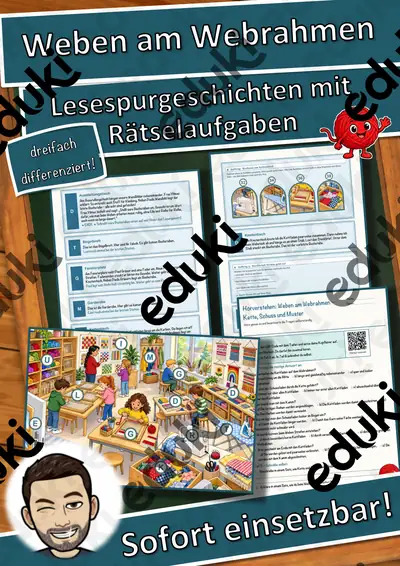
Lesespur: Weben am Webrahmen: Kette, Schuss und Muster – Lesespurgeschichte mit Rätseln (Klasse 3)
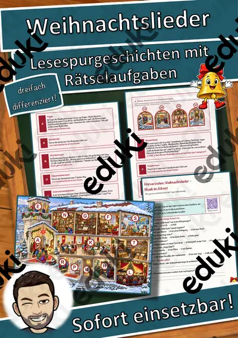
Lesespur: Weihnachtslieder: Musik im Advent – Lesespurgeschichte mit Rätseln (Klasse 3)

Lesespur: Weiß wie der Schnee – Lesespurgeschichte mit Rätseln (Klasse 3)

Lesespur: Wenn die Blätter bunt werden – Lesespurgeschichte mit Rätseln (Klasse 3)

Lesespur: Wenn die Spinnen fliegen – Lesespurgeschichte mit Rätseln (Klasse 3)

Lesespur: Wenn dir kalt wird – Lesespurgeschichte mit Rätseln (Klasse 3)
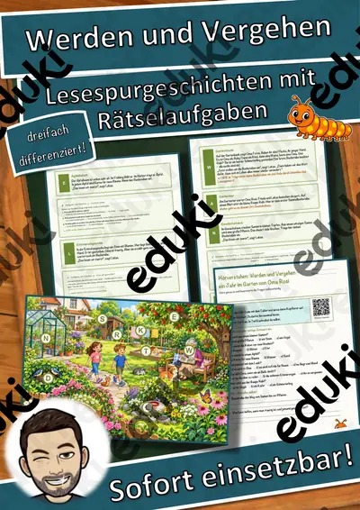
Lesespur: Werden und Vergehen: ein Jahr im Garten von Oma Rosi – Lesespurgeschichte mit Rätseln (Klasse 3)

Lesespur: Werfen: Schlagball, Weitwurf und Zielwurf – Lesespurgeschichte mit Rätseln (Klasse 3)

Lesespur: Wolfgang Amadeus Mozart – Lesespurgeschichte mit Rätseln (Klasse 3)

Materialpaket Advent und Weihnachten für die 3. Klasse: 8 Lesespurgeschichten mit Rätselaufgaben (Barbarazweige, Lebkuchen, Santa Lucia, Sternsinger & mehr)

Materialpaket Advent und Winter für die 6. Klasse: 7 Lesespurgeschichten mit Rätselaufgaben (Weihnachtsbasar, Saturnalien, Lichterfeste & mehr)

Materialpaket Herbst-Lesespuren für die 3. Klasse: 7 Lesespurgeschichten mit Rätselaufgaben (Kürbis, Igel, Laterne, Halloween & mehr)

Materialpaket Lesespurgeschichten Ethik Klasse 3: 9 Lesespuren mit Rätselaufgaben, dreifach differenziert

Materialpaket Lesespurgeschichten Informatik Klasse 3: 8 Lesespuren mit Rätselaufgaben, dreifach differenziert

Materialpaket Lesespurgeschichten Kunst Klasse 3: 9 Lesespuren mit Rätselaufgaben, dreifach differenziert

Materialpaket Lesespurgeschichten Musik Klasse 3: 9 Lesespuren mit Rätselaufgaben, dreifach differenziert

Materialpaket Lesespurgeschichten Sachunterricht Klasse 3 – Alltag, Jahreslauf und Technik: 16 Lesespuren mit Rätselaufgaben, dreifach differenziert

Materialpaket Lesespurgeschichten Sachunterricht Klasse 3 – Tiere, Pflanzen und Natur: 15 Lesespuren mit Rätselaufgaben, dreifach differenziert

Materialpaket Lesespurgeschichten Sport Klasse 3: 9 Lesespuren mit Rätselaufgaben, dreifach differenziert

Materialpaket Natur im Winter für die 3. Klasse: 10 Lesespurgeschichten mit Rätselaufgaben (Wintertiere, Winterwald, Schneespuren & mehr)

Materialpaket Schnee, Eis und Wintersport für die 3. Klasse: 10 Lesespurgeschichten mit Rätselaufgaben (Rodelbahn, Eisstock, Schneelabor & mehr)
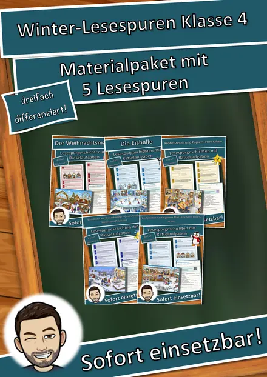
Materialpaket Winter und Advent für die 4. Klasse: 5 Lesespurgeschichten mit Rätselaufgaben (Weihnachtsmarkt, Fröbelsterne, Sternbilder & mehr)
Vorräte wie zu Omas Zeiten – Einkochen, Trocknen, Einlegen – Lesespurgeschichte mit Rätselaufgaben (Klasse 3)
Lesespurgeschichten in der 3. Klasse
In der dritten Klasse sind die Texte kurz und die Wege übersichtlich. Der Lageplan hilft beim Orientieren, und das Lösungswort macht die Selbstkontrolle auch für Leseanfängerinnen und Leseanfänger möglich.
Jede Geschichte liegt in drei Niveaustufen vor, die sich in Textlänge, Satzbau und Aufgabenanspruch unterscheiden. Weg, Stationen und Lösungswort bleiben gleich, sodass alle Fassungen gleichzeitig in einer Klasse laufen können.
Themen auf dieser Seite
Beispiele aus dieser Sammlung: Lesespur: Die Uhr wird umgestellt: Uhrzeiten lesen und Zeitspannen rechnen · Lesespur: Der Ahornweg · Vorräte wie zu Omas Zeiten · Lesespur: Die Streuobstwiese · Lesespur: Die Polarstation · Lesespur: Die Rodelbahn · Lesespur: Der Reiterhof · Lesespur: Taschengeld: mein Geld klug einteilen.